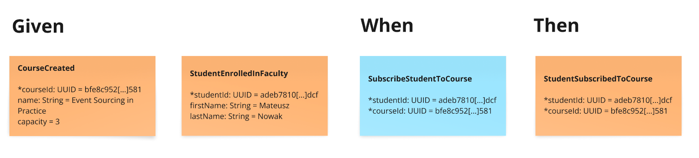

Feature: Subscribe Student
One of the major benefits of Axon Framework 5’s Vertical Slice Architecture is the ability to implement features independently.
Now we’ll implement the SubscribeStudentToCourse feature without needing to implement every feature in between.
As long as we keep the State needed for command validation private to each slice, the only shared code between slices are the events, which serve as the backbone contract of our system.
You don’t even need to stick to certain order. How many times have you heard in the development team: "We’re waiting for feature X to be implemented before we can start on feature Y"?
Define messages
As before, let’s look at the Event Modeling diagram. Which events do we need for this slice to fulfill the following Given-When-Then specification?

In previous section we’ve defined the CourseCreated events, so there are two left from the specification.
Let’s define them as Java records, as before.
public record StudentEnrolledInFaculty(
@EventTag (1)
StudentId studentId,
String firstName,
String lastName
) {
}| 1 | Always remember about marking which properties are event tags. |
public record StudentSubscribedToCourse(
@EventTag (1)
StudentId studentId,
@EventTag (1)
CourseId courseId
) {
}| 1 | Thanks to those annotations the event will be tagged with studentId and courseId.
It’s a good example that StudentSubscribedToCourse event is connected to two business entities—Student and the Course.
When domain experts say that "student subscribed", they know that means the course free spots decreased. And, that the student subscription limit may have been reached.
In the case of one event type per entity/tag/aggregateId we would need to duplicate those events artificially to have two in two different streams. |
Last, but not least, we define the SubscribeStudentToCourse command.
public record SubscribeStudentToCourse(StudentId studentId, CourseId courseId) {
}Specification by example
As you remember from the previous section, we do not focus on entities but on behavior. So we’re going to describe our feature in a Given-When-Then manner based on commands and events. Let’s create the first test case using Axon Test Fixture.
We’re going to translate the Event Modeling specification, which you’ve seen on the top of the page plus other test cases for this slice, to the code. We call it "Test First" as we don’t use TDD to design our application. We do the design on the whiteboard using Event Modeling, which is faster and much less expensive than in the code. From Event Modeling we can derive the test cases for specific slice (functionality) and translate them directly to the code. The Axon Framework supports the Given-When-Then convention pretty well.
| Translating Event Modeling specification to test is a repeatable task, so it can be even done automatically with the help of AI. |
The Subscribe Student feature has several business rules which you may derive from the Event Modeling Given-When-Then specifications:
-
The student must be enrolled in the faculty.
-
The course must exist.
-
The student should not yet be subscribed to the course.
-
The student must not be subscribed to too many courses (limit: 3).
-
The course must not be at full capacity.
Let’s create tests for these scenarios.
class SubscribeStudentToCourseTest {
private AxonTestFixture fixture;
@BeforeEach
void beforeEach() {
var application = new UniversityAxonApplication();
var sliceConfigurer = application.configurer(SubscribeStudentConfiguration::configure);
fixture = AxonTestFixture.with(sliceConfigurer);
}
@AfterEach
void afterEach() {
fixture.stop();
}
@Test
void successfulSubscription() {
var courseId = CourseId.random();
var studentId = StudentId.random();
fixture.given()
.event(new StudentEnrolledInFaculty(studentId, "Mateusz", "Nowak"))
.event(new CourseCreated(courseId, "Axon Framework 5: Be a PRO", 2))
.when()
.command(new SubscribeStudentToCourse(studentId, courseId))
.then()
.events(new StudentSubscribedToCourse(studentId, courseId));
}
@Test
void studentAlreadySubscribed() {
var courseId = CourseId.random();
var studentId = StudentId.random();
fixture.given()
.event(new StudentEnrolledInFaculty(studentId, "Allard", "Buijze"))
.event(new CourseCreated(courseId, "Axon Framework 5: Be a PRO", 2))
.event(new StudentSubscribedToCourse(studentId, courseId))
.when()
.command(new SubscribeStudentToCourse(studentId, courseId))
.then()
.exceptionSatisfies(thrown -> assertThat(thrown)
.hasMessageContaining("Student already subscribed to this course")
);
}
@Test
void studentAlreadySubscribedAnotherCourse() {
var courseId = CourseId.random();
var anotherCourseId = CourseId.random();
var studentId = StudentId.random();
fixture.given()
.event(new StudentEnrolledInFaculty(studentId, "Allard", "Buijze"))
.event(new CourseCreated(courseId, "Axon Framework 5: Be a PRO", 2))
.event(new StudentSubscribedToCourse(studentId, anotherCourseId))
.when()
.command(new SubscribeStudentToCourse(studentId, courseId))
.then()
.events(new StudentSubscribedToCourse(studentId, courseId));
}
@Test
void studentSubscribedIfAnotherOneAlreadySubscribed() {
var courseId = CourseId.random();
var studentId = StudentId.random();
var anotherStudentId = StudentId.random();
fixture.given()
.event(new StudentEnrolledInFaculty(studentId, "Allard", "Buijze"))
.event(new StudentEnrolledInFaculty(anotherStudentId, "Marc", "Gathier"))
.event(new CourseCreated(courseId, "Axon Framework 5: Be a PRO", 2))
.event(new StudentSubscribedToCourse(anotherStudentId, courseId))
.when()
.command(new SubscribeStudentToCourse(studentId, courseId))
.then()
.events(new StudentSubscribedToCourse(studentId, courseId));
}
@Test
void courseFullyBooked() {
var courseId = CourseId.random();
var student1Id = StudentId.random();
var student2Id = StudentId.random();
var student3Id = StudentId.random();
fixture.given()
.event(new StudentEnrolledInFaculty(student1Id, "Mateusz", "Nowak"))
.event(new StudentEnrolledInFaculty(student2Id, "Steven", "van Beelen"))
.event(new StudentEnrolledInFaculty(student3Id, "Mitchell", "Herrijgers"))
.event(new CourseCreated(courseId, "Event Sourcing Masterclass", 2))
.event(new StudentSubscribedToCourse(student1Id, courseId))
.event(new StudentSubscribedToCourse(student2Id, courseId))
.when()
.command(new SubscribeStudentToCourse(student3Id, courseId))
.then()
.exceptionSatisfies(thrown -> assertThat(thrown)
.hasMessageContaining("Course is fully booked")
);
}
@Test
void studentSubscribedToTooManyCourses() {
var studentId = StudentId.random();
var course1Id = CourseId.random();
var course2Id = CourseId.random();
var course3Id = CourseId.random();
var targetCourseId = CourseId.random();
fixture.given()
.event(new StudentEnrolledInFaculty(studentId, "Milan", "Savic"))
.event(new CourseCreated(targetCourseId, "Programming", 10))
.event(new CourseCreated(course1Id, "Course 1", 10))
.event(new CourseCreated(course2Id, "Course 2", 10))
.event(new CourseCreated(course3Id, "Course 3", 10))
.event(new StudentSubscribedToCourse(studentId, course1Id))
.event(new StudentSubscribedToCourse(studentId, course2Id))
.event(new StudentSubscribedToCourse(studentId, course3Id))
.when()
.command(new SubscribeStudentToCourse(studentId, targetCourseId))
.then()
.noEvents()
.exceptionSatisfies(thrown -> assertThat(thrown)
.hasMessageContaining("Student subscribed to too many courses")
);
}
}These tests demonstrate the behavior we want to implement, checking both successful and error cases.
For these tests we need to implement the command handler for SubscribeStudentToCourse command.
As you’ve seen before, for the behavior which is based on some state (so we have something in a Given phase of the test), we need to have State for our command handler to validate commands against it.
Let’s make it right away!
class SubscribeStudentToCourseCommandHandler {
private static final int MAX_COURSES_PER_STUDENT = 3; (1)
@CommandHandler
void handle(
SubscribeStudentToCourse command,
@InjectEntity State state, (2)
EventAppender eventAppender
) {
var events = decide(command, state); (3)
eventAppender.append(events); (4)
}
private List<StudentSubscribedToCourse> decide(SubscribeStudentToCourse command, State state) {
// Check business rules implementation will be added in the following sections
return List.of(new StudentSubscribedToCourse(command.studentId(), command.courseId()));
}
@EventSourcedEntity (5)
static class State {
// State definition will be built incrementally in the following sections
}
}| 1 | For the sample simplicity, we hardcoded the maximum number of courses per student. Each student can subscribe up to 3 courses at the same time. |
| 2 | We use @InjectEntity to inject the state object. |
| 3 | This is your domain model invocation.
You may keep it in the command handler as on the example or make the function unaware of the infrastructure like Axon Framework.
This function resembles the Decider pattern. |
| 4 | We use the EventAppender to stage events to be published after the successful command handling. |
| 5 | Before we defined a tagKey in @EventSourcedEntity annotation. Now we cannot do that, because we require events about every subscription of a student and every subscription to the course. So we have multiple business concepts related to a business process!
In a few paragraphs you will see how to do that with the EventCriteria API. |
We always need a single, unique identifier to load the state, because the @InjectEntity annotation needs to know how to identify the entity to load.
In this case it’s more challenging, because the SubscribeStudentToCourse business process is identified by the command type and also the courseId and studentId.
When you subscribe to the course and want to validate the business rules, you need to be aware of all the subscriptions for the given course and all subscriptions for the given student.
Hence, similar to traditional databases, we need to introduce a type for composite key to identify the entity.
We’re going to use the SubscriptionId class and define it as an TargetEntityId in the SubscribeStudentToCourse command.
record SubscriptionId(CourseId courseId, StudentId studentId) {
}public record SubscribeStudentToCourse(StudentId studentId, CourseId courseId) {
@TargetEntityId
private SubscriptionId subscriptionId() { (1)
return new SubscriptionId(courseId, studentId);
}
}| 1 | The @TargetEntityId annotated method/property can even be private, because it’s just for internal usage for the Axon Framework.
Based on the SubscriptionId we can load the events to build the State object.
We will use the value to define the EventCriteria later in this section. |
As you can see, there are two parts left to implement in the SubscribeStudentToCourseCommandHandler code.
Now we need to validate the business rules, and there are quite a few of them.
The student can subscribe to a course only if they adhere to the domain invariants of the operation.
We will list them along with the assertion function, as well as show what’s needed in the State object to validate them.
Rule #1: The student is enrolled in the faculty
When a student is enrolled in the faculty it has an assigned StudentId, so we add it to the State:
class SubscribeStudentToCourseCommandHandler {
// rest omitted for brevity
@EventSourcedEntity
static class State {
private StudentId studentId;
@EntityCreator
public State() {
}
@EventSourcingHandler
void evolve(StudentEnrolledInFaculty event) {
this.studentId = event.studentId();
}
}
}In the business rule assertion function, we throw an exception if the rule is not satisfied.
This is a different approach from what we used in the CreateCourse feature, where we returned an empty list of events when a business rule was violated.
This error will bubble up as a result of the command to the client.
class SubscribeStudentToCourseCommandHandler {
// rest omitted for brevity
private void assertStudentEnrolledInFaculty(State state) {
var studentId = state.studentId;
if (studentId == null) {
throw new RuntimeException("Student with given id never enrolled the faculty");
}
}
}Rule #2: The course is created Rule #3: The student is not already subscribed to the course Rule #4: The student is not subscribed to too many courses (max 3) Rule #5: The course is not fully booked (based on course capacity)
We’re going to implement all the remaining rules at once.
What else do we need in the State object to validate them?
Definitely not the course name, because it has nothing to do with the business rules, so we don’t handle, even don’t load events like CourseRenamed in order to process the command.
What we’d like to introduce is the minimal set of data we needed to be able to accept or reject the command. It’s the same rule of thumb that you use while designing DDD Aggregates.
So we are going to derive:
-
for Student:
alreadySubscribedandnoOfCoursesStudentSubscribedfromStudentSubscribedToCourseandStudentUnsubscribedFromCourseevents. -
for Course:
courseCapacityandnoOfStudentsSubscribedToCoursefromCourseCreated,CourseCapacityChanged,StudentSubscribedToCourseandStudentUnsubscribedFromCourseevents.
class SubscribeStudentToCourseCommandHandler {
// rest omitted for brevity
@EventSourcedEntity
static class State {
private CourseId courseId;
private int courseCapacity = 0;
private int noOfStudentsSubscribedToCourse = 0;
private StudentId studentId;
private int noOfCoursesStudentSubscribed = 0;
private boolean alreadySubscribed = false;
@EntityCreator
public State() {
}
// other handlers added previously omitted for brevity
@EventSourcingHandler
void evolve(CourseCreated event) { (1)
this.courseId = event.courseId();
this.courseCapacity = event.capacity();
}
@EventSourcingHandler
void evolve(CourseCapacityChanged event) { (2)
this.courseCapacity = event.capacity();
}
@EventSourcingHandler
void evolve(StudentSubscribedToCourse event) { (3)
var subscribingStudentId = event.studentId();
var subscribedCourseId = event.courseId();
if (subscribedCourseId.equals(courseId)) { (4)
noOfStudentsSubscribedToCourse++;
}
if (subscribingStudentId.equals(studentId)) { (5)
noOfCoursesStudentSubscribed++;
}
if (subscribingStudentId.equals(studentId) && subscribedCourseId.equals(courseId)) { (6)
alreadySubscribed = true;
}
}
@EventSourcingHandler
void evolve(StudentUnsubscribedFromCourse event) { (7)
var subscribingStudentId = event.studentId();
var subscribedCourseId = event.courseId();
if(subscribedCourseId.equals(courseId)) {
noOfStudentsSubscribedToCourse--;
}
if (subscribingStudentId.equals(studentId)) {
noOfCoursesStudentSubscribed--;
}
if (subscribingStudentId.equals(studentId) && subscribedCourseId.equals(courseId)) {
alreadySubscribed = false;
}
}
}
}| 1 | Same as with a student, we store the courseId, along with the capacity, from the CourseCreated event. |
| 2 | We update the capacity on CourseCapacityChanged event. |
| 3 | In this case, we’re going to evolve the State on every StudentSubscribed event related to the course or the student whose IDs are in the command. How we instruct the store to load those events will be discussed in the next paragraph.
For now, you need to be aware that you may receive events about different students and different courses. This happens because we have one event handler per event type. The handler processes all StudentSubscribed/StudentUnsubscribed events for:
|
| 4 | If the StudentSubscribedToCourse event is related to the course, we increase the number of students subscribed to the course. |
| 5 | If the StudentSubscribedToCourse event is related to the student, we increase the number of courses the student is subscribed to. |
| 6 | If the StudentSubscribedToCourse event is related to the course and the student, we set the alreadySubscribed flag to true. |
| 7 | The handler for the StudentUnsubscribedFromCourse event is an exact opposite of the evolve method for StudentSubscribedToCourse event. We decrease the numbers that we increased in the previous one. |
How do we ensure that we won’t load events for every student and every course?
How do we limit our Consistency Boundary to only what is really needed to validate business rules?
This is where the EventCriteria comes into play.
Event criteria
While implementing the CreateCourse feature, we defined that we want to build our state based on events that are tagged with courseId by using @EventSourcedEntity(tagKey = "courseId").
For the SubscribeStudentToCourse handling, this is not enough, because, as you already know, we need to build our state based on both studentId and courseId tagged events.
We need all StudentSubscribedToCourse events for the given courseId and also all StudentSubscribedToCourse events for the given studentId.
The same applies to StudentUnsubscribedFromCourse events.
Whereas, for example, with StudentEnrolledInFaculty - we care about just one event for the given studentId. Other students are not involved while processing this command, and there are no business rules between them.
The subscription story is different, because we have a limit of students per course and also a limit of courses per student.
Thanks to the Axon Framework’s EventCriteria concept, we’re able to define the events we’d like to load dynamically.
This is where the Dynamic Consistency Boundary shines.
|
For Axon Framework 4 users:
Before we had to load all events for the given aggregate (from the event stream). We were defining the "tag" of events by using the |
Here the situation is a bit more complicated, because we need to load events for two different entities - Student and Course. In a system based on Aggregates, you have two options.
You may load both entities and limit your accessibility, but this increases the risk of optimistic concurrency. Alternatively, you could implement a complex saga to orchestrate changes between those two entities. With this approach, you would need to duplicate the events and deal with eventual consistency.
Whereas in the domain experts' language, StudentSubscribedToCourse is just one fact, which influences rules around both Student and Course.
As long as we’re in a single bounded context and have all events in one storage, we can define our custom EventCriteria to shape our State, mixing properties from both Student and Course!
The operation will be also immediately consistent and transactional.
If while executing the command, any event matching the same EventCriteria is stored, the operation will fail with an optimistic concurrency exception.
The single responsibility of the State is just to give us enough information to determine if the command satisfies business rules.
class SubscribeStudentToCourseCommandHandler {
// rest omitted for brevity
@EventSourcedEntity
static class State {
// rest omitted for brevity
@EventCriteriaBuilder (1)
private static EventCriteria resolveCriteria(SubscriptionId id) { (2)
var courseId = id.courseId().toString();
var studentId = id.studentId().toString();
return EventCriteria.either(
EventCriteria
.havingTags(Tag.of(FacultyTags.COURSE_ID, courseId)) (3)
.andBeingOneOfTypes(
CourseCreated.class.getName(),
CourseCapacityChanged.class.getName(),
StudentSubscribedToCourse.class.getName(),
StudentUnsubscribedFromCourse.class.getName()
),
EventCriteria
.havingTags(Tag.of(FacultyTags.STUDENT_ID, studentId))
.andBeingOneOfTypes(
StudentEnrolledInFaculty.class.getName(),
StudentSubscribedToCourse.class.getName(),
StudentUnsubscribedFromCourse.class.getName()
)
);
}
}
}| 1 | The @EventCriteriaBuilder annotation marks the method as a criteria builder for the given entity. It gives you more flexibility than just using tagKey property on the @EventSourcedEntity annotation. |
| 2 | Thanks to the SubscriptionId, which is composed of courseId and studentId, we know the values of those tags we needed. |
| 3 | As you may see at the highest level that we combine EventCriteria with either. But, when we define tags through havingTags, it means that a certain type of event requires all of them (there is an OR relation between event types, an AND relation between tags and OR between criteria).
Hence, if we do .havingTags(Tag.of("courseId", courseId), Tag.of("studentId", studentId)) we will only receive subscription events of the given student for one given course.
This is not what we want here.
So, we split StudentSubscribedToCourse and StudentUnsubscribedFromCourse events into two separate criteria (one for student and one for course), because we need to load all events of those types for either courseId or studentId. |
It gives us better accessibility of our system - thanks to that, as you see there is no CourseRenamed event in our criteria, so the Faculty administrator is still able to rename the course in the same time while processing the SubscribeStudentToCourse command. Because the CourseRenamed event doesn’t match the criteria, it’s not in our operation’s consistency boundary.
In case of Aggregates, these operations may clash, or you need to introduce a separate entity for the name to avoid concurrency access issues.
Our colleague Milan from AxonIQ (with our ex-colleague Sara) discuss those scenarios in the talk—we really encourage you to watch it The Aggregate is dead. Long live the Aggregate! by Sara Pellegrini & Milan Savic @ Spring I/O 2023.
|
Keep in mind it’s beneficial to define events types in the criteria.
Technically you can just use |
Summing up
Let’s summarize what we have done so far.
We’ve implemented the whole SubscribeStudentToCourse command handler using the DCB concept in practice.
It was easier than you expected, right?
If you’re not sure if you followed the tutorial correctly, you can always check the code in the repository. The command handler code is here SubscribeStudentToCourseCommandHandler.
If you prefer to use a different style (with multiple state classes - like Course and Student instead of just one) you may also compare it with the solution we have done in the subscribestudentmulti package.
Configuration
Same as before, to make our tests green, the last thing to do is to configure the required infrastructure for the command handler.
To do so, let’s create a new class SubscribeStudentToCourseConfiguration with the following content.
public class SubscribeStudentConfiguration {
public static EventSourcingConfigurer configure(EventSourcingConfigurer configurer) {
var stateEntity = EventSourcedEntityModule
.autodetected(SubscriptionId.class, SubscribeStudentToCourseCommandHandler.State.class);
var commandHandlingModule = CommandHandlingModule
.named("SubscribeStudent")
.commandHandlers()
.annotatedCommandHandlingComponent(c -> new SubscribeStudentToCourseCommandHandler());
return configurer
.registerEntity(stateEntity)
.registerCommandHandlingModule(commandHandlingModule);
}
}Now we need to register the configuration in the UniversityAxonApplication class as follows.
public class UniversityAxonApplication {
public static ApplicationConfigurer configurer() {
return configurer(c -> {
CreateCourseConfiguration.configure(c);
SubscribeStudentConfiguration.configure(c); (1)
});
}
// rest omitted for brevity
}| 1 | We register the SubscribeStudentConfiguration as a child of the EventSourcingConfigurer. |
Now what’s better for a developer than seeing the green bar flash in your IDE after running the tests? Let’s do it! Remember to mark the slice as completed in the Event Modeling diagram if you use this approach.